1.个人配置
- Hexo v3.8.0
- NexT.Muse v7.1.2
2.Hexo博客NexT主题博客置顶
2.1安装支持置顶的仓库
1 | npm uninstall hexo-generator-index --save |
然后在需要置顶的文章的Front-matter中加上top: true即可
1 |
|
2.2设置置顶标志
修改：~/themes/next/layout/_macro 目录下的post.swig文件，定位到<div class="post-meta">标签下方，插入如下代码：
1 | {% if post.top %} |
2.3.测试
经过测试，top的值可以是阿拉伯数字，其中1 和true 相当，如果存在多篇置顶的文档，top值越大越靠前
3.Hexo博客NexT主题添加顶部加载进度条
3.1安装Progress module
进入Next主题目录~/themes/next/，使用Git bash clone文件
1 | git clone https://github.com/theme-next/theme-next-pace source/lib/pace |
修改主题目录下~/themes/next/的主题配置文件_config.yml
1 | pace: true # true 开启加载进度条 |
3.2.不同主题的预览效果
- pace-theme-big-counter
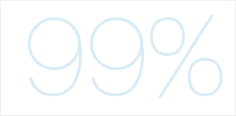 - pace-theme-bounce
- pace-theme-barber-shop
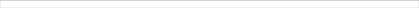
- pace-theme-center-atom
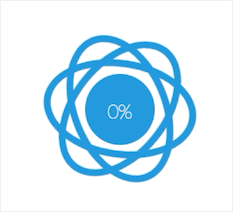
- pace-theme-center-circle
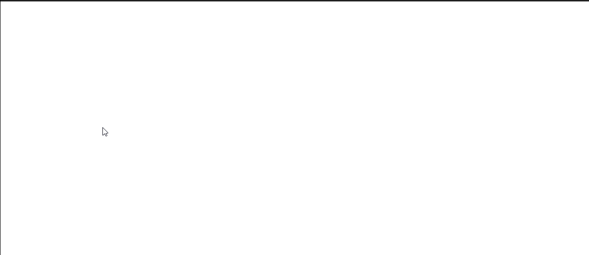
- pace-theme-center-radar
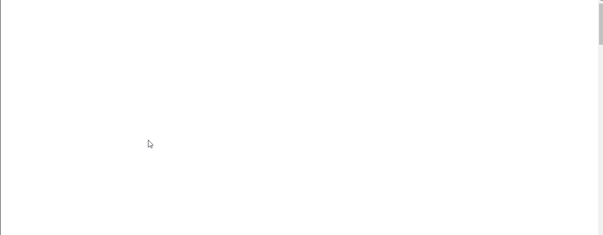
- pace-theme-center-simple
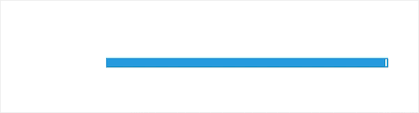
- pace-theme-corner-indicator
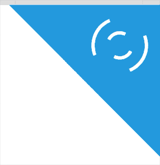
- pace-theme-fill-left
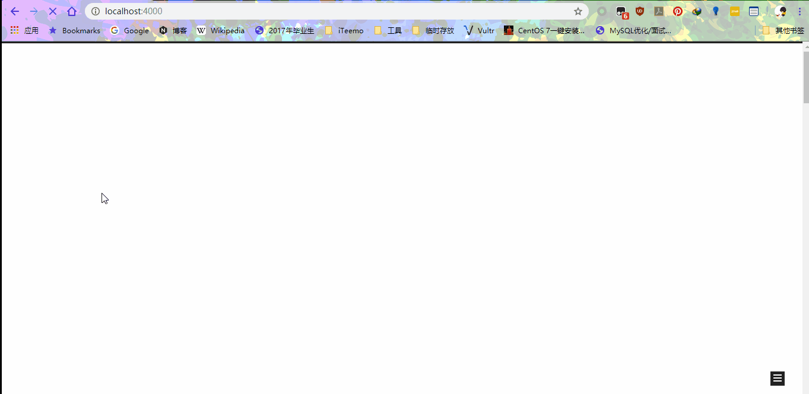
- pace-theme-flash
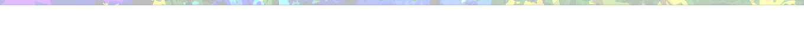
- pace-theme-loading-bar
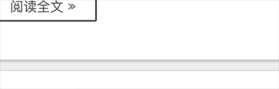
- pace-theme-mac-osx
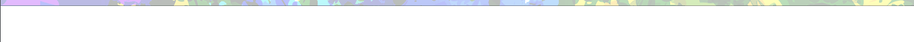
- pace-theme-minimal
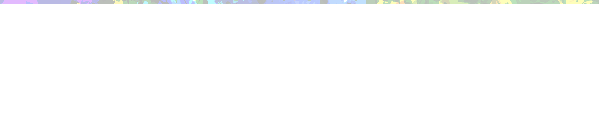
4.Hexo博客Next主题添加分类和标签页面
4.1 添加「分类」页面
新建「分类」页面，并在菜单中显示「分类」链接。「分类」页面将展示站点的所有分类，若你的所有文章都未包含分类，此页面将是空的。 底下代码是一篇包含分类的文章的例子：
1 |
|
在Hexo 站点目录下,使用 hexo new page 新建一个页面，命名为 categories ：
1 | hexo new page categories |
编辑刚新建的页面，将页面的 type 设置为 categories ，主题将自动为这个页面显示分类。页面内容如下：
1 |
|
在菜单中添加链接。编辑主题配置文件，添加 categories 到 menu 中，如下:
1 | menu: |
4.2添加「标签」页面
新建「标签」页面，并在菜单中显示「标签」链接。「标签」页面将展示站点的所有标签，若你的所有文章都未包含标签，此页面将是空的。 底下代码是一篇包含标签的文章的例子：
1 | title: Tag Test Article |
在Hexo 站点目录下,使用 hexo new page 新建一个页面，命名为 tags ：
1 | hexo new page tags |
编辑刚新建的页面，将页面的类型设置为 tags ，主题将自动为这个页面显示标签云。页面内容如下：
1 |
|
在菜单中添加链接。编辑主题配置文件，添加 categories 到 menu 中，如下:
1 | menu: |
5.Hexo博客NexT主题添加搜索选项
5.1安装hexo-generator-searchdb插件
在Hexo根目录启动命令窗口运行
1 | npm install hexo-generator-searchdb --save |
编辑Hexo配置文件~/_config.yml
1 | search: |
编辑主题配置文件~/themes/next/_config.yml
1 | # Local search |
6.Hexo博客NexT主题显示最后更新时间
6.1修改NexT主题_config.yml
NexT主题好像已经集成了，我在修改date_format的时候发现，修改完之后竟然有了最后更新时间
1 | # Date / Time format |
仅仅将date_format，加上了HH:mm:ss
6.2测试
效果图
7.Hexo博客URL优化
针对Hexo博客URL层级太多，以及包含中文名字进行优化
7.1修改permalink
修改Hexo根目录~/_config.yml文件
定位permalink，默认配置为：
1 | permalink: :year/:month/:day/:title/ |
将其修改为：
1 | permalink: posts/:urlname/ |
其中，urlname是在每篇博客的Front-matter中定义的一个变量。也是为每篇博客取的英文名字。
1 |
|
修改成功之后，服务器上的目录结构会变成这样：
文件夹的名字是我们设置的title的名字，访问的URL是域名/posts/urlname
8.Hexo博客插入本地图片
8.1修改Hexo配置文件
修改Hexo根目录下的_config.yml
1 | post_asset_folder: true |
这个功能实际上是Hexo官方文档中提到的资源文件夹功能，它的作用在于当你使用
1 | hexo new tittle |
生成新的文章的时候，会在~/source/_posts目录下生成一个文章名.md 文件外，还会生成一个与文章名同名的文件夹，可以用它来存放这篇文章的所有资源，比如图片，附件等。我们需要做的就是把我们本篇博客中使用到的图片放到与博客名字同名的文件夹里。
### 3.安装hexo-asset-image插件(现在的版本不需要安装依然可以使用asset标签)
1 | npm install https://github.com/CodeFalling/hexo-asset-image --save |
但是我在使用过程中还是不能显示，所以参照了这一篇博客，对~/node_modules/hexo-asset-image/目录中的index.js 进行修改
1 | ; |
8.2测试
第一种方法
1 |  |

第二种方法
1 |  |
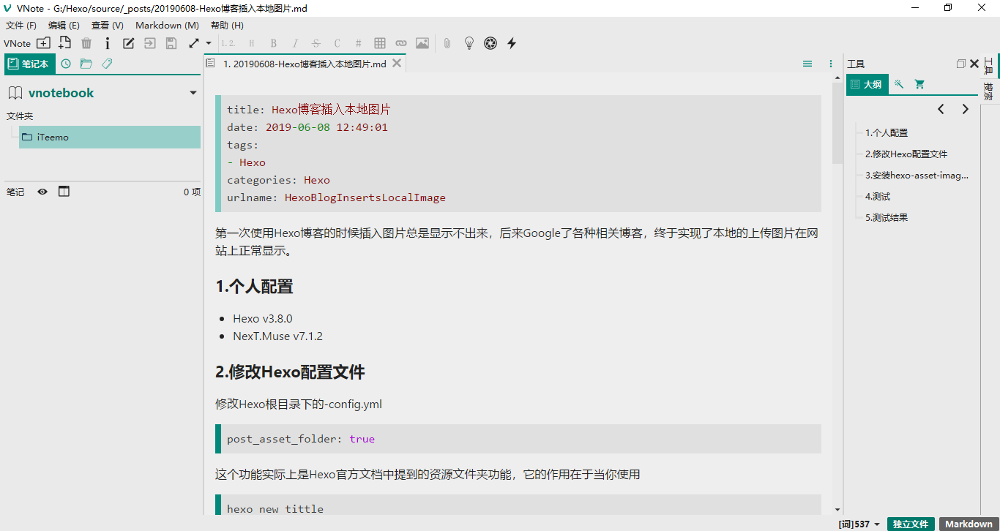
第三种方法
1 | {% asset_img 插入本地图片测试.png %} |

8.3测试结果
经过测试发现，上述三种方法是可以实现插入图片的，通过查看网页源代码发现，中文名字的图片的名称发生了变化，变成了这样子。
中文名称的图片会乱码，但是直接点击链接访问的话，URL是中文名称
而服务器的目录结构中也是中文名称
而使用第三种方法即标签的方式，不会出现乱码问题
9.Hexo博客文章目录取消自带的编号
9.1修改NexT主题_config.yml
利用Ctrl + F 搜索 toc
1 | toc: |
将number修改为false